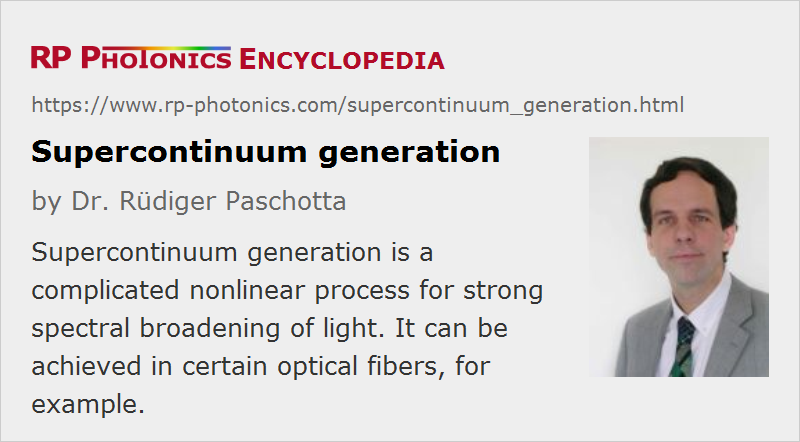

Supercontinuum Generation
Acronym: SCG
Definition: a nonlinear process for strong spectral broadening of light
More general terms: nonlinear frequency conversion
German: Superkontinuum-Erzeugung
How to cite the article; suggest additional literature
Author: Dr. Rüdiger Paschotta
Supercontinuum generation is a process where laser light is converted to light with a very broad spectral bandwidth (i.e., low temporal coherence), i.e., a super-wide continuous optical spectrum. This means that the temporal coherence is very low (but with important restrictions – see below!), whereas the spatial coherence usually remains high.
The spectral broadening is usually accomplished by propagating optical pulses through a strongly nonlinear device. For example, one may send an intense (amplified) ultrashort pulse through a piece of bulk glass. Alternatively, one can send pulses with much lower pulse energy through an optical fiber, having a much higher nonlinearity and also a waveguide structure which ensures a high beam quality. Of special interest are photonic crystal fibers, mainly due to their unusual chromatic dispersion characteristics, which can allow a strong nonlinear interaction over a significant length of fiber. Even with fairly moderate input powers, very broad spectra are achieved; this leads to a kind of “laser rainbow”.
In many cases, optical fibers are used for supercontinuum generation. Frequently, one uses photonic crystal fibers, which can be made with tailored chromatic dispersion properties and often also exhibit increased nonlinearity due to strong mode confinement. Some special solutions, which are less widely used, are briefly mentioned in the following:
- In some cases, tapered fibers are used [6], which provide a very strong nonlinear interaction over a short length.
- There have been demonstrations where the air holes of a photonic crystal fiber was filled either with a gas (which may e.g. be Raman-active) or with a highly nonlinear liquid such as carbon tetrachloride [33] or toluene [32].
Figures 1 and 2 show numerically simulated results for supercontinuum generation in a very short piece of fiber. In many cases, however, much longer fibers are used – then usually in conjunction with much lower peak powers.
Applications of supercontinua include optical coherence tomography, fluorescence microscopy, flow cytometry, the characterization of optical devices, the generation of multiple carrier waves in optical fiber communications systems, and the measurement of the carrier–envelope offset frequency of frequency combs.
The Physics of Supercontinuum Generation
The physical processes behind supercontinuum generation in fibers can be very different, depending particularly on the chromatic dispersion and length of the fiber (or other nonlinear medium), the pulse duration, the initial peak power and the pump wavelength. When femtosecond pulses are used, the spectral broadening can be dominantly caused by self-phase modulation. In the anomalous dispersion regime, the combination of self-phase modulation and dispersion can lead to complicated soliton dynamics, including the split-up of higher-order solitons into multiple fundamental solitons (soliton fission). For pumping with picosecond or nanosecond pulses, Raman scattering and four-wave mixing can be important. Supercontinuum generation is even possible with continuous-wave beams, when using multi-watt laser beams in long fibers; Raman scattering and four-wave mixing are very important in that regime.
The noise properties of the generated continua can also be very different in different parameter regions. In some cases, e.g. with self-phase modulation being the dominant mechanism and the dispersion being normal, the process is very deterministic, and the phase coherence of the generated supercontinuum pulses can be very high, even under conditions of strong spectral broadening. In other cases (e.g. involving higher-order soliton effects), the process can be extremely sensitive to the slightest fluctuations (including quantum noise) e.g. in the input pulses, so that the properties of the spectrally broadened pulses vary substantially from pulse to pulse.
The strongly nonlinear nature of supercontinuum generation makes it difficult to understand intuitively all the details of the interaction, or to predict relations with analytical tools. Therefore, numerical pulse propagation modeling (often with special precautions due to the extreme optical bandwidth) is required for the analysis of such processes. Intuitive pictures or analytical guidelines can be tested by comparison with results from such numerical models.
Coherence Properties
It is worth spending some thoughts on the coherence properties of supercontinua. The spatial coherence (considering the cross-spectral density) is usually very high, particularly when the source involves a single-mode fiber. On the other hand, the high spectral bandwidth suggests a very low temporal coherence. However, supercontinua generated from periodic pulse trains can still have a high temporal coherence in the sense that there can be strong correlations between the electric fields corresponding to different pulses, if the spectral broadening mechanism is highly reproducible. This kind of coherence is in fact very important for the generation of frequency combs in photonic crystal fibers, and it may or may not be achieved depending on parameters such as the seed pulse duration and energy, fiber length, and fiber dispersion.
The initially surprising discrepancy between high bandwidth and high temporal coherence can be resolved by realizing the shape of the field correlation function: it has a very narrow peak around zero time delay (with a width of e.g. a few femtoseconds), but there are also additional peaks with comparable height at time delays corresponding to integer multiples of the pulse period. Hence there is low temporal coherence in the sense of vanishing correlations for most time delays, but high temporal coherence in the sense of strong correlations for some large time delays.
Suppliers
The RP Photonics Buyer's Guide contains 21 suppliers for supercontinuum sources. Among them:
Questions and Comments from Users
Here you can submit questions and comments. As far as they get accepted by the author, they will appear above this paragraph together with the author’s answer. The author will decide on acceptance based on certain criteria. Essentially, the issue must be of sufficiently broad interest.
Please do not enter personal data here; we would otherwise delete it soon. (See also our privacy declaration.) If you wish to receive personal feedback or consultancy from the author, please contact him e.g. via e-mail.
By submitting the information, you give your consent to the potential publication of your inputs on our website according to our rules. (If you later retract your consent, we will delete those inputs.) As your inputs are first reviewed by the author, they may be published with some delay.
Bibliography
| [1] | R. R. Alfano and S. L. Shapiro, “Observation of self-phase modulation and small-scale filaments in crystals and glasses”, Phys. Rev. Lett. 24 (11), 592 (1970), doi:10.1103/PhysRevLett.24.592 |
| [2] | C. Lin and R. Stolen, “New nanosecond continuum for excited-state spectroscopy”, Appl. Phys. Lett. 28, 216 (1976), doi:10.1063/1.88702 |
| [3] | N. Akhmediev and M. Karlsson, “Cherenkov radiation emitted by solitons in optical fibers”, Phys. Rev. A 51 (3), 2602 (1995), doi:10.1103/PhysRevA.51.2602 |
| [4] | J. K. Ranka et al., “Visible continuum generation in air–silica microstructure optical fibers with anomalous dispersion at 800 nm”, Opt. Lett. 25 (1), 25 (2000), doi:10.1364/OL.25.000025 |
| [5] | M. Bellini and T. W. Hänsch, “Phase-locked white-light continuum pulses: toward a universal optical frequency comb synthesizer”, Opt. Lett. 25 (14), 1049 (2000), doi:10.1364/OL.25.001049 |
| [6] | T. A. Birks et al., “Supercontinuum generation in tapered fibers”, Opt. Lett. 25 (19), 1415 (2000), doi:10.1364/OL.25.001415 |
| [7] | A. V. Husakou and J. Herrmann, “Supercontinuum generation of higher-order solitons by fission in photonic crystal fibers”, Phys. Rev. Lett. 87 (20), 203901 (2001), doi:10.1103/PhysRevLett.87.203901 |
| [8] | J. M. Dudley et al., “Supercontinuum generation in air–silica microstructure fibers with nanosecond and femtosecond pulse pumping”, J. Opt. Soc. Am. B 19 (4), 765 (2002), doi:10.1364/JOSAB.19.000765 |
| [9] | W. J. Wadsworth et al., “Supercontinuum generation in photonic crystal fibers and optical fiber tapers: a novel light source”, J. Opt. Soc. Am. B 19 (9), 2148 (2002), doi:10.1364/JOSAB.19.002148 |
| [10] | A. L. Gaeta, “Nonlinear propagation and continuum generation in microstructure optical fibers”, Opt. Lett. 27 (11), 924 (2002), doi:10.1364/OL.27.000924 |
| [11] | S. Coen et al., “Supercontinuum generation by stimulated Raman scattering and parametric four-wave mixing in photonic crystal fibers”, J. Opt. Soc. Am. B 19 (4), 753 (2002), doi:10.1364/JOSAB.19.000753 |
| [12] | J. M. Dudley and S. Coen, “Coherence properties of supercontinuum spectra generated in photonic crystal and tapered optical fibers”, Opt. Lett. 27 (13), 1180 (2002), doi:10.1364/OL.27.001180 |
| [13] | W. J. Wadsworth et al., “Supercontinuum generation and four-wave mixing with Q-switched pulses in endlessly single-mode photonic crystal fibres”, Opt. Express 12 (2), 299 (2004), doi:10.1364/OPEX.12.000299 |
| [14] | S. G. Leon-Saval et al., “Supercontinuum generation in submicron fibre waveguides”, Opt. Express 12 (13), 2864 (2004), doi:10.1364/OPEX.12.002864 |
| [15] | B. Schenkel et al., “Pulse compression with supercontinuum generation in microstructure fibers”, J. Opt. Soc. Am. B 22 (3), 687 (2005), doi:10.1364/JOSAB.22.000687 |
| [16] | B. Kibler et al., “Supercontinuum generation and nonlinear pulse propagation in photonic crystal fiber: influence of the frequency-dependent effective mode area”, Appl. Phys. B 81, 337 (2005), doi:10.1007/s00340-005-1844-z |
| [17] | F. Vanholsbeeck et al., “The role of pump incoherence in continuous-wave supercontinuum generation”, Opt. Express 13 (17), 6615 (2005), doi:10.1364/OPEX.13.006615 |
| [18] | C. Xia et al., “Mid-infrared supercontinuum generation to 4.5 μm in ZBLAN fluoride fibers by nanosecond diode pumping”, Opt. Lett. 31 (17), 2553 (2006), doi:10.1364/OL.31.002553 |
| [19] | J. Dudley et al., “Supercontinuum generation in photonic crystal fiber”, Rev. Mod. Phys. 78, 1135 (2006), doi:10.1103/RevModPhys.78.1135 |
| [20] | J. H. V. Price et al., “Mid-IR supercontinuum generation from nonsilica microstructured optical fibers” (contains numerical simulations with RP ProPulse), IEEE J. Sel. Top. Quantum Electron. 13 (3), 738 (2007) |
| [21] | A. V. Gorbach and D. V. Skryabin, “Light trapping in gravity-like potentials and expansion of supercontinuum spectra in photonic-crystal fibres”, Nature Photon. 1, 653 (2007), doi:10.1038/nphoton.2007.202 |
| [22] | D. R. Solli et al., “Optical rogue waves”, Nature 450, 1054 (2007), doi:10.1038/nature06402 |
| [23] | G. Genty, S. Coen and J. M. Dudley, “Fiber supercontinuum sources”, J. Opt. Soc. Am. B 24 (8), 1771 (2007), doi:10.1364/JOSAB.24.001771 |
| [24] | E. Goulielmakis et al., “Ultrabroadband, coherent light source based on self-channeling of few-cycle pulses in helium”, Opt. Lett. 33 (13), 1407 (2008), doi:10.1364/OL.33.001407 |
| [25] | G. Genty et al., “Harmonic extended supercontinuum generation and carrier envelope phase dependent spectral broadening in silica nanowires”, Opt. Express 16 (15), 10886 (2008), doi:10.1364/OE.16.010886 |
| [26] | B. A. Cumberland et al., “Toward visible cw-pumped supercontinua”, Opt. Lett. 33 (18), 2122 (2008), doi:10.1364/OL.33.002122 |
| [27] | H. Hundertmark et al., “Octave-spanning supercontinuum generated in SF6-glass PCF by a 1060 nm mode-locked fibre laser delivering 20 pJ per pulse”, Opt. Express 17 (3), 1919 (2009), doi:10.1364/OE.17.001919 |
| [28] | J. M. Dudley and J. R. Taylor, “Ten years of nonlinear optics in photonic crystal fibre”, Nature Photon. 3, 85 (2009), doi:10.1038/nphoton.2008.285 |
| [29] | X. Hu et al., “High average power, strictly all-fiber supercontinuum source with good beam quality”, Opt. Lett. 36 (14), 2659 (2011), doi:10.1364/OL.36.002659 |
| [30] | A. M. Heidt et al., “Limits of coherent supercontinuum generation in normal dispersion fibers”, J. Opt. Soc. Am. B 34 (4), 764 (2017), doi:10.1364/JOSAB.34.000764 |
| [31] | R. A. Martinez et al., “Mid-infrared supercontinuum generation from 1.6 to >11 μm using concatenated step-index fluoride and chalcogenide fibers”, Opt. Lett. 43 (2), 296 (2018), doi:10.1364/OL.43.000296 |
| [32] | V. T. Hoang et al., “All-normal dispersion supercontinuum generation in photonic crystal fibers with large hollow cores infiltrated with toluene”, Optical Materials Express 8 (11), 3568 (2018), doi:10.1364/OME.8.003568 |
| [33] | V. T. Hoang et al., “Supercontinuum generation in an all-normal dispersion large core photonic crystal fiber infiltrated with carbon tetrachloride”, Optical Materials Express 9 (5), 2264 (2019), doi:10.1364/OME.9.002264 |
| [34] | W. P. Putnam et al., “Few-cycle, carrier-envelope-phase-stable laser pulses from a compact supercontinuum source”, J. Opt. Soc. Am. B 36 (2), A93 (2019), doi:10.1364/JOSAB.36.000A93 |
| [35] | M. Yu et al., “Coherent two-octave-spanning supercontinuum generation in lithium-niobate waveguides”, Opt. Lett. 44 (5), 1222 (2019), doi:10.1364/OL.44.001222 |
| [36] | R. R. Alfano, The Supercontinuum Laser Source, Springer, New York (1989) |
| [37] | R. Paschotta, case study on supercontinuum generation in a photonic crystal fiber |
(For additional references, see the articles on frequency combs and frequency metrology.)
See also: optical spectrum, coherence, amplified spontaneous emission, photonic crystal fibers, tapered fibers, frequency combs, frequency metrology, spectrograms
and other articles in the category nonlinear optics

This encyclopedia is authored by Dr. Rüdiger Paschotta, the founder and executive of RP Photonics Consulting GmbH. How about a tailored training course from this distinguished expert at your location? Contact RP Photonics to find out how his technical consulting services (e.g. product designs, problem solving, independent evaluations, training) and software could become very valuable for your business!
|  |
If you like this page, please share the link with your friends and colleagues, e.g. via social media:
These sharing buttons are implemented in a privacy-friendly way!